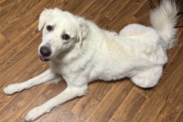

She Barks, Barks, and Barks more. She sleeps, and sleeps more. This is the wonderful world of a giant fluff.
Fun Facts
Named After the Star Trek Deep Space Nine character Jadzia Dax (image source: wikimedia)Her parents were farm dogs.(Image Source: wikimedia)

She likes to sit alot
She adores other animals, especially her cats.
"How to prepare for a Great Pyranees: Talk to Rocks, because they have similar listening habits."
- Unknown Author
Want to learn more?
Check out the wikipedia page for the Great Pyranees